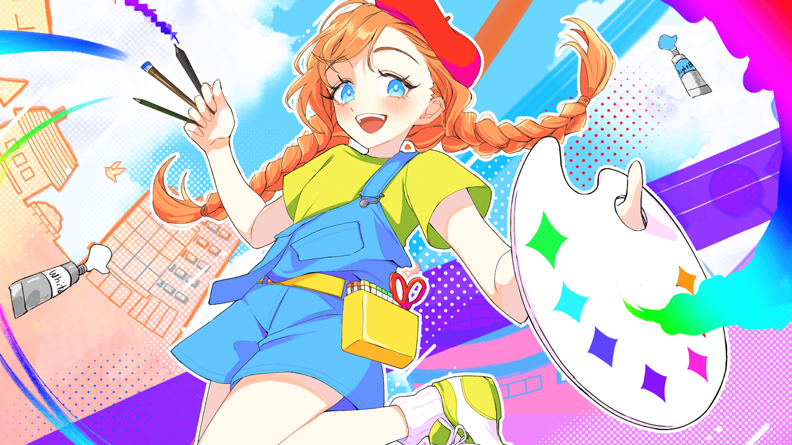
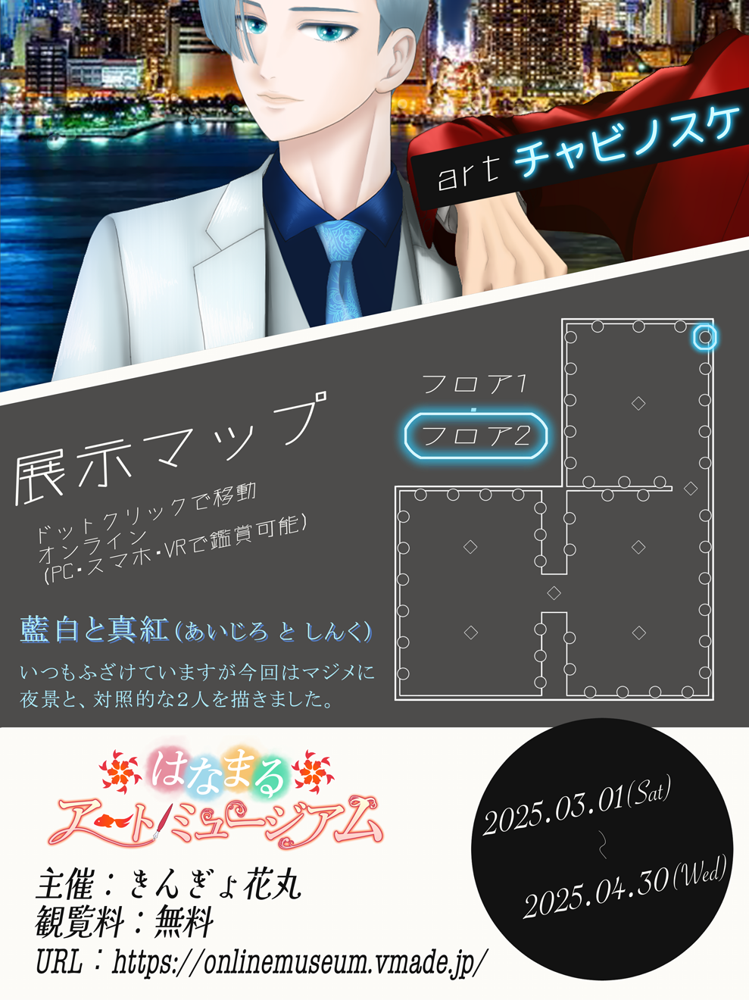

３Dギャラリスト という バーチャルギャラリーで開催された
『 はなまるアートミュージアム 』。
開催期間：2025年3月1日～4月30日（現在終了）

キャラクター名：はなまるちゃん
／
絵の著作権（作者）：餅花うもう 様
公式イラスト・キャラクターの所有権：餅花うもう 様、きんぎょ花丸 様（公式サイトより引用）
主催者のきんぎょ花丸さんが 個人で出資され、
その他に クラウドファンディングにてご支援いただけ開催されたイベントです！
『 １００％ 絵師のための オンライン美術館 』
と 謳っている通り、AI絵が普及していく昨今において絵を描く人たちが
自分の手で 自分の作品を描き展示する美術館 というコンセプトで 始まったと記憶しています。
そのため、AI使用禁止、二次創作禁止などの規約も 色々と設けられていました。
ミュージアム宣伝用の テンプレート。スッキリした素敵なデザインで お気に入りです。
このテンプレートの おかげで、『絵』って感じします。テンプレート様様です。

この絵の全体像、まだこのミュージアムの中でしか公開していないので
どこか飾れる所（ネット上）を考え、置き場が決まったら このページも更新したいと思います。
背景の窓、ビルの間の車やネオン、スーツの陰影、髪の毛一本一本などなど、
細かい所が多くて、ペンタブの芯が １個無くなりました。使いかけではありましたが…。(笑)
８６人の絵の出展者他 詩などがイメージごとに分けて展示してあり、とても見ごたえがありました。
きんぎょさんがオススメされている通り、ゆったりBGMの中 コーヒーを片手に くつろげる空間で
２ヵ月で終わってしまうのが もったいないなと思いました。
今回も、色々と勉強になったので この様な機会に ご縁があってよかったと思います！
本当に参加できてよかったです！感謝です！！
▲ 美術館を全部巡り 裏話やコメントを しています ▲
2022/10/15～終了
▲ 公式ページはこちら ▲
© 2024 chabinosuke_